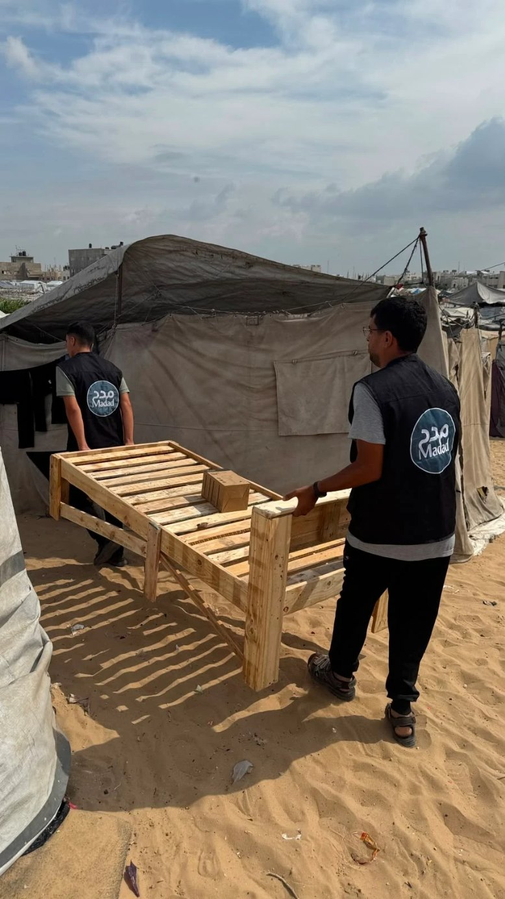

01
التدخلات الإنسانية العاجلةUrgent Humanitarian Interventions
نقدّم المساعدات الإنسانية العاجلة لأهلنا في غزة، في ظل استمرار الحصار والقصف والنزوح، لنصل بالدعم إلى الأسر الأكثر احتياجًا ونخفف عنهم قسوة الواقع.We deliver urgent humanitarian aid to our people in Gaza amid the ongoing siege, bombardment and displacement — reaching the families most in need and easing the harshness of their reality.
تبرع الانDonate now